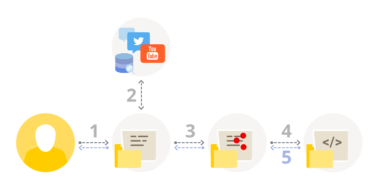
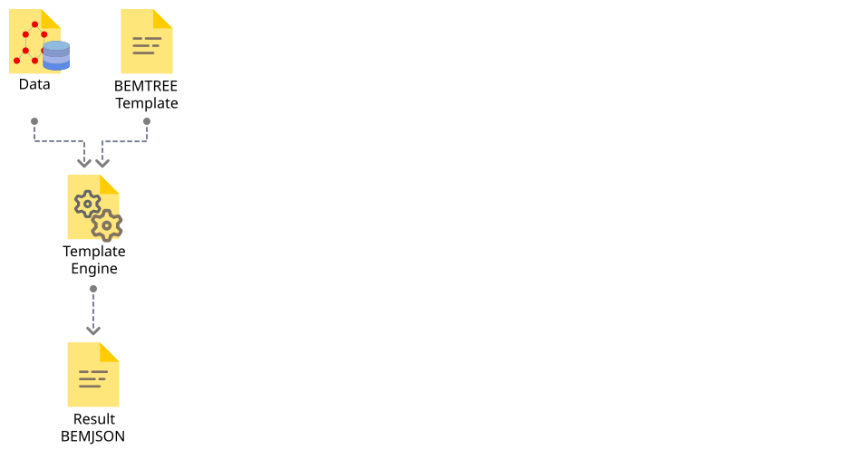
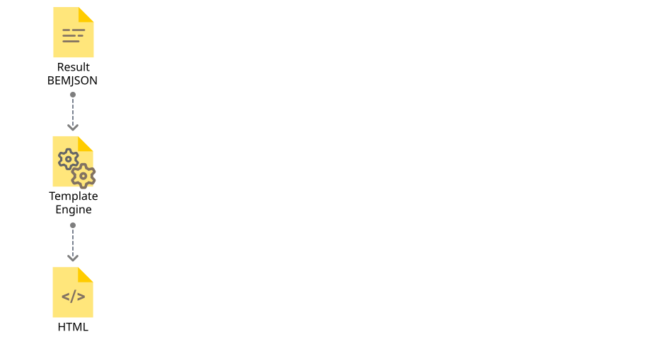

Создаем динамический БЭМ-проект
Введение
Многие современные приложения обмениваются данными в режиме реального времени с последующей частичной или полной перезагрузкой страницы.
Цель документа — показать, как разрабатывать БЭМ-проекты, ориентированные на динамические данные.
В документе рассматривается процесс создания двух приложений:
Hello, World — быстрый старт по созданию динамических приложений.
Social Services Search Robot — приложение для поиска твитов и видео по ключевому слову.
Для работы потребуется установить:
Примечание. В документе не рассматриваются вопросы верстки и клиентского JS.
Приложение Hello, World
Представляет собой динамическое приложение, которое выводит слова «Hello, World!» в выходной поток, демонстрируя тем самым, что оно запускается и может выполнять операции ввода/вывода.
Давайте создадим это приложение, а затем расширим его до Social Services Search Robot.
Чтобы создать приложение Hello, World:
Склонируйте шаблонный репозиторий bem-express.
git clone https://github.com/bem/bem-express.git bem-projectПримечание. В данном примере используется
bem-expressверсии 2.00.Перейдите в директорию проекта.
cd bem-projectУдалите историю версионирования исходного репозитория.
rm -rf .gitИнициализируйте собственный Git-репозиторий.
git init
Установите зависимости.
npm install
Соберите проект и запустите сервер.
npm run dev
Примечание. За сборку проекта отвечает ENB.
При запуске приложения в терминале выведется сообщение о том, что сервер выполняется на порту 3000:
Server is listening on 3000.Примечание. Если порт 3000 занят, его можно переназначить (например, на 8000):
PORT=8000 npm run dev
На компьютере запустился:
Cервер — отвечает за обработку динамических данных.
Nodemon — следит за изменениями на файловой структуре и перезапускает сервер.
Chokidar — следит за изменениями в директориях *.blocks/ и перестраивает структуру проекта.
Livereload — обновляет страницу в браузере.
Откройте браузер и введите адрес localhost:3000.
Должна открыться страница со следующим содержимым:
Index page content footer content
Откройте файл server/index.js и внесите следующие изменения в код, начинающегося строкой
app.get('/', function(req, res):// ... app.get('/', function(req, res) { + var hello = 'Hello'; + var world = 'World'; render(req, res, { view: 'page-index', title: 'Main page', meta: { description: 'Page description', og: { url: 'https://site.com', siteName: 'Site name' } }, + hello: hello, + world: world }) }); // ...Откройте файл common.blocks/page-index/page-index.bemtree.js и замените его содержимое на следующее:
block('page-index').content()(function() { // Получаем данные из глобального объекта `this` var data = this.data; // Возвращаем полученные данные: `data.hello: 'Hello'`, `data.world: 'World'` return data.hello + ', ' + data.world + '!'; });После сохранения, сервер автоматически перезапустится, и содержимое страницы изменится на:
Hello, World! footer content
Приложение Hello, World готово.
Примечание. Если при создании приложения возникли сложности, поищите решение на форуме. Если готового ответа не нашлось, задайте вопрос экспертам.
Приложение Social Services Search Robot
Представляет собой динамическое приложение, которое выводит последние твиты и видео по ключевому слову.
Цель разработки данного приложения — показать взаимосвязь:
данных и интерфейса в БЭМ-проекте.

Схема работы приложения
Работу приложения можно представить следующей схемой:

Пользователь отправляет запрос на сервер.
Приложение получает данные от Twitter Search API и YouTube Data API в соответствии с запросом пользователя.
Приложение передает полученные данные BEMTREE-шаблонизатору, который преобразует данные в BEMJSON.
Приложение передает BEMJSON BEMHTML-шаблонизатору, который преобразует BEMJSON в HTML.
Приложение возвращает HTML-страницу пользователю.
Используемые технологии БЭМ
В работе будем использовать следующие технологии:
BEMDECL — технология для описания деклараций в БЭМ.
DEPS — технология для описания зависимостей в БЭМ.
BEMTREE — шаблонизатор преобразующий данные в BEMJSON.
BEMHTML — шаблонизатор преобразующий BEMJSON в HTML.
i-bem.js — JavaScript-фреймворк для БЭМ.
BEMDECL
Определяет список БЭМ-сущностей, используемых на странице.
Такой список в БЭМ называется декларацией. Задача декларации — определить, что и в каком порядке подключать в сборку.
Декларации описываются в файлах с расширением .bemdecl.js.
Пример декларации из приложения Hello, World:
// Файл `desktop.bundles/index/index.bemdecl.js`
exports.blocks = [
{ name: 'root' }
];
Как видно из примера, в файле index.bemdecl.js определен только блок root. Это не означает, что на странице нет других блоков. Блок root следует рассматривать как центральную «точку входа» для сборщика. Все остальные БЭМ-сущности попадают в сборку по зависимостям. При использовании технологии DEPS, в декларации определяют блок, с которого начинается сборка проекта.
Пример сборки проекта по зависимостям (из приложения Hello, World):
root(DECL) # Сборщик ищет файл index.bemdecl.js
|
└──> root(DEPS) # Сборщик ищет файл root.deps.js
|
└──> page(DEPS) # Сборщик ищет файл page.deps.js
|
├──> header(DEPS) # Сборщик ищет файл header.deps.js
| |
| └──> ...
|
├──> body(DEPS) # Сборщик ищет файл body.deps.js
| |
| └──> ...
|
└──> footer(DEPS) # Сборщик ищет файл footer.deps.js
|
└──> ...
Подробнее о технологии BEMDECL.
DEPS
Определяет зависимости между БЭМ-сущностями, которые разнесены по файловой структуре проекта и не отражены в декларации.
Зависимости описываются в виде JavaScript-объекта в файлах с расширением .deps.js.
Пример зависимостей для блока root из приложения Hello, World:
// Файл `common.blocks/root/root.deps.js`
({
shouldDeps: 'page'
})
Подробнее о технологии DEPS.
BEMTREE
Является частью шаблонизатора bem-xjst и преобразует данные в BEMJSON.
Шаблоны описываются в BEMJSON-формате в файлах с расширением .bemtree.js.
Вход и выход шаблонизатора:

Подробнее о технологии BEMTREE.
BEMHTML
Является частью шаблонизатора bem-xjst и преобразует BEMJSON-описание страницы в HTML.
Шаблоны описываются в файлах с расширением .bemhtml.js.
Вход и выход шаблонизатора:

Подробнее о технологии BEMHTML.
i-bem.js
Клиентский JavaScript-фреймворк для веб-разработки в рамках БЭМ-методологии.
JavaScript-код описывается в файлах с расширением .js.
Позволяет:
Разрабатывать веб-интерфейс в терминах блоков, элементов, модификаторов.
Описывать логику работы блока в декларативном стиле — как набор состояний.
Легко интегрировать код JavaScript с BEMHTML-шаблонами и CSS.
Гибко переопределять поведение библиотечных блоков.
Подробнее о технологии i-bem.js.
Файловая структура проекта
Имеет следующий вид:
bem-project/
.enb/ # Конфигурационные файлы для сборщика ENB
common.blocks/ # Базовые реализации блоков
desktop.bundles/ # Директории бандлов проекта
development.blocks/ # Блоки, подключаемые в процессе разработки
node_modules/ # Установленные модули Node (пакеты)
server/ # Директория с серверным кодом
static/ # Корневая директория для раздачи статических файлов
.bemhint.js # Конфигурация линтера Bemhint
.borschik # Конфигурация сборщика файлов Borschik
.eslintignore # Исключение файлов и директорий в ESLint
.eslintrc # Конфигурация ESLint
.gitignore # Исключение файлов и директорий в Git
.stylelintrc # Конфигурация Stylelint
.travis.yml # Автоматический запуск линтеров в Continuous Integration
nodemon.json # Конфигурация для пакета Nodemon
package.json # Описание проекта для npm
README.md # Текстовое описание проекта
Создание приложения
Изменение файловой структуры проекта
Прежде чем перейти к работе с Twitter Search API и YouTube Data API, давайте изменим структуру взятого за основу приложения Hello, World.
Создайте в директории server следующие поддиректории и файлы:
server/ + controllers/ # Контроллеры + index.js # Контроллер обработки запросов и рендеринга HTML + helpers/ # Хелперы + index.js # Входная точка для модулей-хелперов (E) + twitter.js # Модуль-хелпер для работы с Twitter Search API (E) + youtube.js # Модуль-хелпер для работы с YouTube Data API (E) + middleware/ # Модули промежуточного звена + auth.js # Модуль проверки прохождения аутентификации на YouTube (E) + app.js # Модуль монтирования промежуточных модулей + auth.js # Модуль аутентификации на YouTube (E) config.js index.js rebuild.js render.js + routes.js # Модуль маршрутизации запросовПримечание. Файлы помеченные флагом E (Empty) потребуются позже.
Добавьте следующий код в файл controllers/index.js.
Добавьте следующий код в файл app.js.
Добавьте следующий код в файл routes.js.
Замените содержимое файла index.js на следующее.
Примечание. В
index.jsостается только функциональность, отвечающая за запуск приложения и прослушивание запросов на порте.
После выполненных действий, по адресу localhost:3000 по-прежнему должна открываться страница со следующим содержимым:
Hello, World! footer content
Примечание. Если ваш код не работает — ищите опечатки.
Установка дополнительных модулей
Для работы приложения необходимо установить следующие модули:
express — предоставляет функциональность для построения веб-приложения.
passport — предоставляет стратегии аутентификации в приложениях на Node.js.
passport-youtube-v3 — предоставляет стратегию аутентификации на Youtube посредством аккаунта Youtube и токенов OAuth 2.0.
twitter — клиентская библиотека для работы с Twitter REST API.
googleapis — клиентская библиотека для работы с Google REST API.
moment — JavaScript библиотека для синтаксического анализа, валидации и форматирования дат.
Установить модули можно командой:
$ npm install express passport passport-youtube-v3 twitter googleapis@^20.0.1 moment --save
Получение OAuth-токена для Twitter
Twitter предлагает приложениям возможность выдавать аутентифицированные запросы от имени самого приложения. Для доступа к API используется открытый протокол авторизации OAuth 2.0.
Чтобы получить OAuth-токен:
Изучите документацию.
Зарегистрируйте приложение.
Получите ключи: Consumer Key, Consumer Secret.
Закодируйте строку вида:
<Consumer Key>:<Consumer Secret>методом Base64.
Используйте полученные токен и ключи в запросах к Twitter Search API. Подробнее см. Работа с Twitter Search API.
Важно! Сохраните полученные токен и ключи (Consumer Key и Consumer Secret). Они необходимы для конфигурационного файла приложения.
Получение OAuth-токена для Google
Google предлагает приложениям возможность выдавать аутентифицированные запросы от имени самого приложения. Для доступа к API используется открытый протокол авторизации OAuth 2.0.
Примечание. За получение и обновление OAuth-токена с помощью POST-запроса в обмен на код авторизации отвечает модуль passport-youtube-v3.
Чтобы получить OAuth-токен:
Изучите документацию.
Зарегистрируйте приложение и получите Client ID и Client Secret.
Укажите callback URL (в нашем случае это
http://localhost:3000) в учетной записи вашего приложения.
Используйте полученные Client ID и Client Secret в запросах к YouTube Data API. Подробнее см. Работа с YouTube Data API.
Важно! Сохраните полученные ключи (Client ID и Client Secret). Они необходимы для конфигурационного файла приложения.
Конфигурация приложения
Добавьте в файл server/config.js поле
services.module.exports = { staticFolder: 'static', defaultPort: 3000, cacheTTL: 30000, sessionSecret: 'REPLACE_ME_WITH_RANDOM_STRING', + services: { + twitter: { + consumer_key: '*****', + consumer_secret: '*****', + bearer_token: '*****' + }, + youtube: { + client_id: '*****', + client_secret: '*****', + redirect_url: 'http://localhost:3000' + } + } };Замените звездочки полученными ключами и токенами.
Скройте файл server/config.json от системы контроля версий Git, чтобы случайно не отправить личные ключи в репозиторий.
# файл .gitignore server/config.js
Работа с Twitter Search API
Twitter Search API позволяет найти твиты, опубликованные за последние 7 дней.
Чтобы настроить приложение на взаимодействие с API:
Откройте файл controllers/index.js и замените его содержимое на следующее.
Добавьте следующий код в файл helpers/index.js:
module.exports = { twitter: require('./twitter') };Добавьте следующий код в файл helpers/twitter.js.
Работа с YouTube Data API
YouTube Data API позволяет искать видео по ключевому слову.
Чтобы настроить приложение на взаимодействие с API:
Добавьте следующий код в файл server/auth.js.
Отредактируйте файл server/routes.js:
var router = require('express').Router(), controllers = require('./controllers'), + passportYouTube = require('./auth'), + middleware = require('./middleware/auth'), + isAuthenticated = middleware.isAuthenticated; router - .get('/ping/', function(req, res) { - res.send('ok'); - }) - .get('/', controllers.getContent); + .get('/auth/youtube', passportYouTube.authenticate('youtube')) + .get('/auth/youtube/callback', passportYouTube.authenticate('youtube', + {failureRedirect: '/error', failureFlash: true }), (req, res) => { + res.redirect('/'); + }) + .get('/', isAuthenticated, controllers.getContent); module.exports = router;Замените содержимое файла controllers/index.js на следующее.
Отредактируйте файл helpers/index.js:
module.exports = { twitter: require('./twitter'), + youtube: require('./youtube') };Добавьте следующий код в файл helpers/youtube.js.
Добавьте следующий контент в файл middleware/auth.js:
module.exports = { isAuthenticated: function(req, res, next) { if (req.isAuthenticated()) return next(); return res.redirect('/auth/youtube'); } };
Верстка
Данный документ не содержит описания верстки и клиентского JavaScript, которое привело бы к большему объему, а, значит, и к меньшей практической ценности документа.
Процесс верстки сведен к следующим шагам:
Удалите все блоки из директории common.blocks.
Склонируйте следующие блоки в директорию common.blocks.
Добавьте logo.svg в директорию static.
Перезапустите сервер:
npm run dev.
Приложение Social Services Search Robot готово.
Примечание. Если при создании приложения возникли сложности, поищите решение на форуме. Если готового ответа не нашлось, задайте вопрос экспертам.
FAQ
Как закодировать строку методом Base64?
Чтобы закодировать строку:
Сформируйте строку вида:
<Consumer Key>:<Consumer Secret>.Пример
xvz1evFS4wEEPTGEFPHBog:L8qq9PZyRg6ieKGEKhZolGC0vJWLw8iEJ88DRdyOgПримечание. Получить ключи Consumer Key и Consumer Secret можно, перейдя на вкладку Keys and Access Tokens вашего приложения.
Запустите терминал или Git Bash (пользователям ОС Windows).
Выполните команду
echo -n "xvz1evFS4wEEPTGEFPHBog:L8qq9PZyRg6ieKGEKhZolGC0vJWLw8iEJ88DRdyOg" | base64.Скопируйте полученный код.
Пример
eHZ6MWV2RlM0d0VFUFRHRUZQSEdFS2hab2xHQzB2SldMdzhpRUo4OERSZHlPZw==
Примечание. Если возникли сложности, воспользуйтесь онлайн-ресурсом base64encode.org.
Как получить OAuth-токен?
Чтобы получить токен:
Установите и запустите Postman.
Выберите тип запроса POST.
Введите адрес сервера (для Twitter —
https://api.twitter.com/oauth2/token).Перейдите на вкладку Headers.
Добавьте заголовки:
AuthorizationиContent-Typeс соответствующими значениями.Key Value Authorization Basic закодированная строка Consumer Key:Consumer SecretContent-Type application/x-www-form-urlencoded;charset=UTF-8 Примечание. Basic указывает на базовый метод авторизации.
Перейдите на вкладку Body → Выберите опцию
x-www-form-urlencoded.Введите в поле Key тело запроса
grant_typeсо значениемclient_credentials.Нажмите кнопку Send.
OAuth-сервер вернет токен в JSON-формате:
{
"token_type": "bearer",
"access_token": "AAAAAAAAAAAAAAAAAAAAAA%2FAAAAAAAAAA%3DAAAAAAAAAAAAAAAAAA"
}
Важно! Сохраните полученный токен для конфигурационного файла приложения.